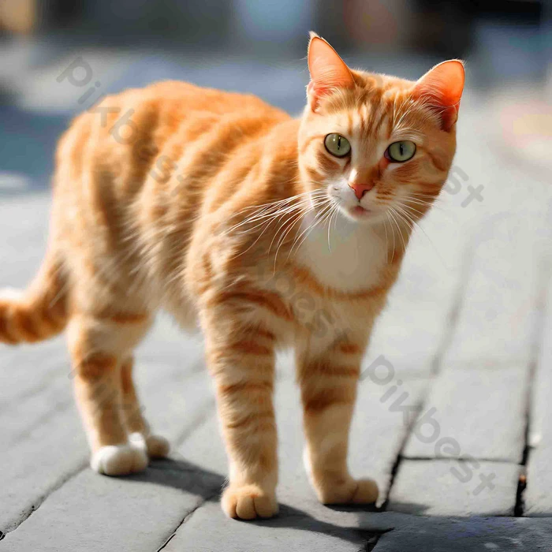

القطط الاليفة

القِطّ أو الهِرّ أو البِسّ هو نوع من أنواع الثدييات آكلات اللحوم، وهو
الحيوان الوحيد المستأنس من فصيلة السنوريات،
وغالبا ما يشار إليه
باسم القط المنزلي لتمييزه عن باقي أفراد فصيلته من القطط البرية. يمكن
أن تكون القطط إما قطط
منزلية أو قطط مزارع أو قطط برية، والفئة
الأخيرة تتجول بحرية وتتجنب التواصل مع البشر.اقرا... المزيد
انواع القطط

تتوقف أفضل أنواع القطط على احتياجاتك وأسلوب حياتك، ولكن بعض السلالات تحظى بشعبية كبيرة كحيوانات أليفة منزلية. من بين هذه السلالات: القط السيامي، والشيرازي، والبريطاني قصير الشعر، والبنغالي، والماين كون، والروسي الأزرق.
من اكثر الانواع المحبوبه

القطط الشيرازي
مواصفات القطط الشيرازي
الشعر: يتميز بفراء طويل وكثيف يتطلب عناية منتظمة لتجنب التشابك.
الوجه: يتميز بالوجه المستدير والمسطح مع أنف قصير.
العيون: عيون كبيرة وواسعة، عادة ما تكون زرقاء أو خضراء أو نحاسية.
الجسم: متوسط إلى كبير الحجم، مع أرجل قصيرة وقوية.
الذيل: مغطى بفرو كثيف ويتناسب مع حجم الجسم.
الأذنان: صغيرتان ومستديرتان.
الهدوء: معروفة بشخصيتها الهادئة والمسالمة. الود: محبة وحنونة، وعادة ما تكون ودودة مع أفراد الأسرة. الذكاء: تتميز بذكاء وفطنة، وتتكيف بسهولة مع البيئة المحيطة. الرقة: تتميز بحركاتها الرقيقة وتصرفاتها الأنيقة. تفضل الأجواء المنزلية: تستمتع بالعيش في بيئة منزلية هادئة ومألوفة. العناية بالقطط
التغذيه:
العناية بالفرو: يجب تمشيط الفرو بانتظام لمنع التشابك والحفاظ على مظهره الصحي. العناية بالعيون والأسنان والأذنين: يجب تنظيفها بانتظام لمنع المشاكل الصحية. التحكم في درجة الحرارة: قد تتأثر القطط الشيرازي بالحرارة بسبب فراءها الكثيف، لذا يجب توفير بيئة مريحة وباردة لها. أمراض القطط الشيرازي: مشاكل التنفس: بسبب الأنف القصير، قد تعاني من مشاكل في التنفس. أمراض العيون: قد تكون أكثر عرضة لالتهابات العيون. أمراض الكلى: قد تكون عرضة للإصابة بمرض الكلى المتعدد الكيسات. أمراض القلب: قد تكون عرضة للإصابة باعتلال عضلة القلب. نصائح قبل تبني قط شيرازي: تأكد من أنك مستعد لتلبية احتياجاتها: تتطلب القطط الشيرازي رعاية خاصة وعناية منتظمة. اختر القطط من مربي موثوق به: تأكد من أن القطط التي تختارها صحية وخالية من الأمراض. وفر لها بيئة آمنة ومريحة: تأكد من أن منزلك آمن ومناسب لقطتك، ووفر لها مكانًا هادئًا ومريحًا للاسترخاء. تعرف على عاداتها وسلوكياتها: تعرف على احتياجات قطتك وكيفية التعامل معها. . شيرازي - قطط في مصر | دوبيزل مصر (أوليكس) * 5,000 ج.م قطط شيرازي و راغدول للبيع ... * 400 ج.م قطه شيرازي ... * 350 ج.م قطه شيرازي بيور شقيه جدا ٦٠ يوم ... * 600 ج.م قط شير... OLX Egypt قطه شيرازي / انثى - ركن الميو - أفضل متجر لبيع القطط في المملكة ما يميز قطط شيرازي مون فيس؟ قطط الشيرازي مون فيس تتميز بشكل وجه دائري وعيون واسعة وجذابة، وشعر كثيف ناعم يضفي عليها مظهرًا فخمًا. هذ... ركن الميوتحتاج إلى نظام غذائي متوازن لتلبية احتياجاتها من الفيتامينات والمعادن.
الفرق بين القطط الشيرازى الأصلى والمخلطة.. نصائح عند الشراء ١٠/١٢/٢٠٢٤ — أولا: القط الشيرازي الأصلي تمتاز القطط الشيرازية الأصلية بمظهرها الأنيق والجذاب، حيث كانت تُربى في البداية كنوع من الزي... بوابة الطبيب البيطري عرض الكلّ